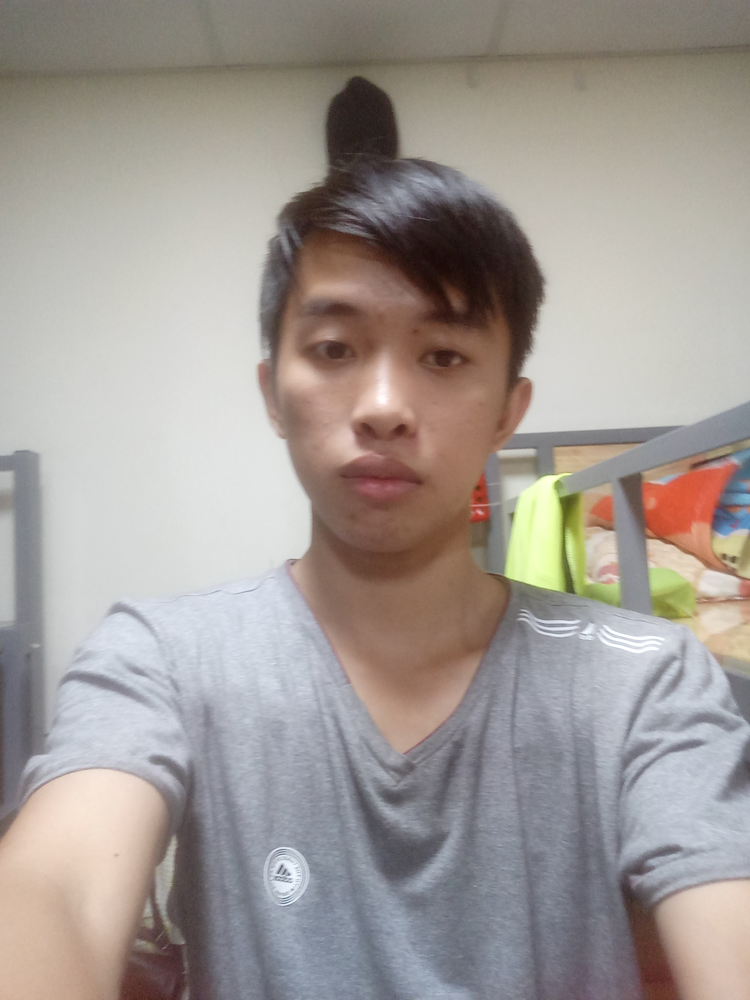
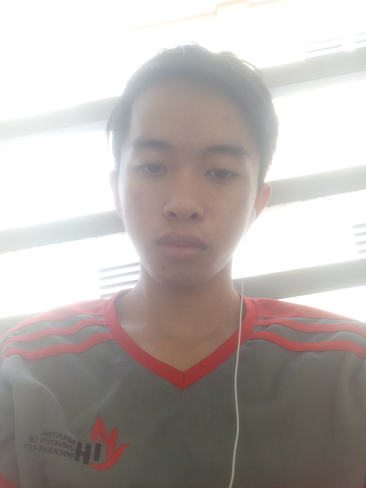
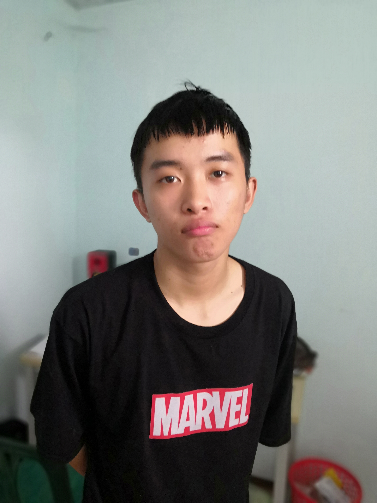
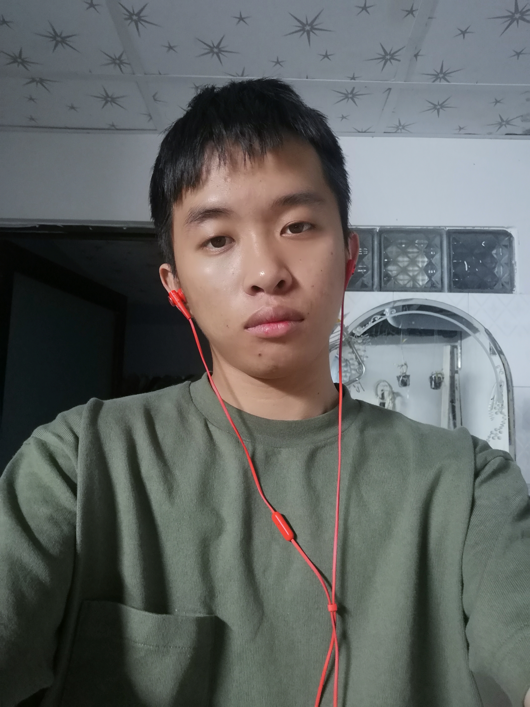

Phạm Đình Công Secret
Dành Cho Những Người Mình Thấy Quan Trọng Trong Cuộc Đời Mình
Page này mình viết vào ngày 11/4/19, còn những dòng note thì khá lâu rồi nên khi đọc á, nhớ đừng cười, có vài thứ mình đọc lại còn thấy bản thân còn con nít quá, nhưng thế lại hay mà, đúng không. Cảm xúc mỗi ngày cứ để vào đây hết, có thể lớn, có thể nhỏ, không quan trọng, rồi khi đọc lại thì mình cảm thấy hồi đó như thế này như thế kia .Mong sao cứ mỗi lần note thì dòng suy nghĩ mình nó cứ khác đi, chả mong hơn ai, chỉ hi vọng ngày hôm nay sẽ hơn bản thân ngày hôm qua thôi. Rồi lỡ mai sau giàu tự làm phim về mình, dm lúc đó lại có thể nổi tiếng nữa thì hay,hh.
Người đầu tiên đọc và được đề cập nhiều nhất trong tầm thời gian này chắc là Cọp Hý rồi, lý do tớ tạo page này vì cậu là nhiều á, cứ muốn gặp để đôi ba lời tâm sự nhưng cậu cứ chối làm tớ phải viết vô note cho giải tỏa ( chán quá nên ghi chứ không phải tự kỉ đâu nhá), để rồi tự dưng bật lên ý nghĩ sẽ ra sao nếu mình viết những thứ này và một ngày cho cậu xem, thông minhhhhh. Hiện tại nhá, tớ vẫn kì vọng là bản thân mình có thể kéo cậu lại với tớ một lần nữa, nhưng nếu không cũng chả sao, dù sao cũng cảm ơn cậu. Người con gái mà tớ đã níu kéo tới cùng, hihi. Tớ hiện tại (11/4) vẫn còn yêu cậu nhiều lắm đấyy..... Làm tới đây phát đã 3 tiếng cmnr, thôi ngủ.

Do m hết thôii, t chả ép hay cố khiến m phải thích t gì cả, lúc đầu mới ct thì không nói, mà sau tết t hay chán nản, bế tắc, thật sự chỉ muốn hẹn gặp để có m để hàn huyên tí thôi, t thương m thì chắc còn rồi,không thì chắc chắn là xạo lìn, nhưng t nói đến việc đó làm gì hòai cho nó nhạt, vs càng nói thì cơ hội gặp m lại càng thấp thôi chứ có ích gì, trên hết t chỉ muốn bt vs m lại rồi sau này lỡ m có thích t lại thì t mừng thôi, không thì cũng chả sao tại t cũng đã ước chừng được rồi, cơ mà m khó quá, càng ngày càng xây cho bức tường nó dày, ít ra t cũng làm đc đủ thứ cho bạn, mà bạn cứ lơ tui hòai, cảm giác nó đổ sông đổ bể chả đc tích sự gì, nên tui nản. Thế thôi. H t còn thích cậu nên t thương cậu nhiều, nhưng tới tầm nào đó t sẽ ghét m rất nhiều đấy.
Thật nha, nói chung từ lúc thích m đên h luôn á, dường như bh t cũng giành 1 khoảng tg trong ngày là nhớ tới m, kiểu h thành thói quen luôn rồi m ạ, rồi tới khi ct thì dm nó x lên gấp 10 gấp nhiều nhiều lần hơn nữa, tới giờ vẫn thế thôi, tóm tém đã 3 cái sn m rồi, nói thiệt cái tg m lên SG tới lúc ct là lúc t ngu nhất, tại lúc đó t yêu m nhiều quá, thật sự là quên luôn cả bản thân luôn á, rồi sau tiếp là 3 tháng dm chán chường nhất của t, kiểu bất cần đời luôn, thề, trc đã ít nói rồi, tầm đó nữa là câm luôn, chả thiết tha nc hay làm việc gì vs ai cả, tóm lại là do mong đợi từ m quá nhiều, mà càng mong thì ôi dồi càng thất vọng, càng chán chê, đừng nghĩ t lụy hay gì, đến t cũng chả biết nữa, t rất muốn quên m cho khỏe mà quên đc thì đã ngon, thói quen khó bỏ thế đấy. Đến mức mà dm phải hạn chế đi làm lại, tại lúc làm, đầu t hay nghĩ này nghĩ nọ mà tầm này thì m biết t nghĩ gì rồi chứ chi nữa, rồi ngủ nữa, may mà tìm ra bí quyết ngủ ngon bằng đeo tai nghe nghe xàm xàm người ta kể chứ không giám nghe hát về tình yêu blabloooo, để yên ắng thì nó lại trôi vào câu chuyện của t vs m thôi, h này wifi hư nên t mới éo ngủ đc mà viết đây, 3h khuya chứ đéo đùa. Chung quy thì bây h quên m mệt lắm m ạ, t giờ thì cũng bớt hơn về mặt tâm lý rồi, đã xác định đc rất rất nhiều thứ để hoàn thiện trc khi yêu một ai khác nữa rồi, nào thì đam mê, sự nghiệp, ước mơ, đủ cả và những thứ đó sẽ dell tầm thường tí nào và bí mật nè 4-5 năm nữa nếu m còn ế và t cũng còn thương m ( t chưa yêu ai nữa) và nếu m chấp nhận thì t sẽ xin hỏi cưới m nha, hh cái ni là mục tiêu nhá, t hứa nếu mà như vậy thì t sẽ không để m khổ như giờ đâu, tính t nhỏ h ít khi hứa vs ai và nếu hứa sẽ cố hết sức để thực hiện để tránh bị càm ràm, tại t biết con người t ntn một khi đã nhớ thì chả có cách nào để quên, t nói thật, không cần sự thương hại hay gì của m như trước, t sẽ sẽ cố gắng hết mình, tất cả sự nghiệp, đam mê, ước mơ của t đều xuất phát từ mục tiêu cả, không phải vì m là tất cả mà vì t muốn lấy m làm động lực. Yêu ai thì yêu làm gì thì làm kệ m, tầm này t chỉ muốn m bớt lơ t đi con chó ạ, nếu m thấy cực kì ghét t tới mức không muốn nc vs t thì oke, t lượn, còn nếu m muốn t quên đc m á, chả bh đâu, t cũng khổ tâm lắm đấyyyy. Càng lơ thì t càng nhớ, mà càng nhớ thì lại càng buồn. Làm bạn cũng đc, chả nhất thiết phải hơn, h thì t cũng chả có tg để ráng yêu đâu, bắt đầu bận rồi, lâu lâu đi xem phim tí, lâu lâu đi coi thả diều, t không hiểu m nhiều, nhưng t biết m thích gì nhiều, nên cứ cho t thời gian của m, t sẽ không làm m thất vọng, hay cảm thấy không THỎAI MÁI đâu nhá, dmm. Nhắn mà không rep nữa đi, cạch mặt mãi mãi, vĩnh viễn, ifinity time. Ps:M có thể tìm đc 1 thằng đẹp hơn t, mập hơn t, blablo hơn t, nhưng chắc chắn là kbh yêu vs qt m bằng t đâu nháaaaaA.
Lâu lâu rảnh rang t lại lấy đt ra note tí cho bớt cô đọng từ ngữ lại, vs viết vầy để đỡ chán thôi...
9/4/19 tui nhớ Hý quá à, tình đơn phương nó chán vãi lìn. Ưoc gì cậu biết được tớ nhớ cậu tới chừng nào
Hôm nay chả nghiệm ra điều gì cả, cũng chả học thêm đc gì nhiều, nói chumg là vẫn còn chậm
Cv hiện tại:
Html:80%
Css:80%
Js: gà công nghiệp, khó vlc mà thiếu thằng này là khỏi đi làmb
B4:60% or hơn tí
Jquery: 50% nếu có tài liệu thì 75% á
Angularjs:đang học tầm 10% rồi, xây đi xây lại là vững
Reactjs: éo biết gì
Ajax:éo biết nốt
Photoshop:chưa tập nhiều nhưng cũng dễ
Priemiere :tạm được.
Nấu ăn: ngày xem 1-2 video mà h vẫn ngu ngu
Thôi ngủ thức trắng moljt ngày rồi, chán vlin
Trước khi yêu một ai khác phải xong những thứ này :
+ Kiếm đc đồng tiền từ công việc mà mình coi là bước đệm
+ Không được ích kỷ ( sao gần đây thấy bản thân mình nó càng ngày càng như vậy là sao tar)
+ Bớt lười
+ Ăn nói tốt hơn, quan điểm thật vững
+ Chả cần quan tâm bố con thằng nào xem mình ntn. Chả muốn nợ ai và chả muốn ai nợ mình. Khỏe.
+ Ráng mua con sony a6000, tập tành ap, mình muốn nhìn cs bằng con mắt của mình coi nó có đẹp bằng ngta không, hh. Chi ít mình hông đẹp thì mình phải làm thứ khác đẹp
+ Bỏ gảme, không nghiện nhưng chán là chơi nên thấy tốn kém quá, h lại còn bị nghiện trà sữa, ớn
---Chút tâm tư: lâu rồi cũng không buồn nữa, h chỉ nhớ thôi, nhớ rất rất nhiều, muốn m cút thật xa khỏi đầu óc t, mà khó quá..
8/4/19 - - 3h:48 Tự dưng thấy bản thân có phần nào đó trưởng thành hơn rồi phải, hay do cảm xúc hiện tại nó vậy tar, thôi cố lên nào m ơi, chặng đường m viết trong đầu so vs hiện tại còn xa xa xa lắm.
Nay ngủ hơi nhiều, đù cả người.
Giờ mới có thể nói điều quan trọng mà chỉ có mỗi mình biết, dù biết con đường đại học nó là con đường ngắn nhất rồi, giờ mà đi học tiếp thì vs tầm kiếm thức hiện tại +2 năm nữa thì éo phải giỡn, nhưng học nó chán quá, chả có tí động lực nào, vì thế mình đã quyết định dừng lại, bố mẹ kì vọng nhiều lắm, giờ cũng cảm thấy hối hận nhưng lỡ rồi. Vẫn con đường ấy, trở thành 1 dev tốt thì chắc h chưa quyết định đc, tại mình biết mình lười vl, nhưng vẫn theo thứ mà mình đã chọn, không học ở trường thì tự học ở nhà thật sự nó khó khăn hơn nhiều nhiều lần, dễ nản bome vì chỉ có 1 mình 1 đường. Nhưng cảm thấy bản thân hiện tại cũng phất lên rồi, ráng cày bữa nốt hè này rồi xin đi thực tập, rồi đi làm luôn, khỏi bằng đại học. cố lên tôi ơi.
SECRET:
Không có thói quen hứa với ai điều gì nhưng những lời hứa vs ai đó mà chưa thực hiện được mình luôn áy náy những thứ mình chưa làm được khi nói vs ai đó
1. Sẽ thay ô tô cho bố, time: chuẩn bị lên SG học đh (nghi là đell nổi rồi, h bần quá, không biết tương lai ra sao)
2. Đi phát tờ rơi cho ông Duy, 3 tháng rồi. Tuần nào cũng tự dặn lòng là phải đi phát dùm ổng mà lười quá.
3. Edit video cho ông Duy nốt ( cái này mới hứa vài bữa à, chắc chắn sẽ làm rồi mà nó cứ áy náy sao á).
4. Dẫn Hý đi ăn mì quảng ( chả nhớ nói hồi nào, mà nhớ là có nói qua rồi)
5. Dẫn Hý đi Đà Lạt (hôm chia tay :(( , nếu được thì sinh nhật m t sẽ rủ m đi rồi thêm Thảo, Xíu đồ nữa,heh, đang tập edit vid, nếu đc t sẽ edit thật xuất sắc để sau nhìn lại mới thấy nó vui).
6. Dẫn Hý đi sapa vào năm nay (6/6) ( cái này tui tự hứa vs bản thân thôi, lúc còn đi dạo nvh vs nhau nghe cậu kể là thích sapa này nọ thì trong đầu t hiện lên liền là 2 năm nữa phải dẫn m đi sapa, tầm tháng 12 năm ngoái cũng đc 10tr rồi đell phải đùa, cơ mà mua đt mất, xong rồi chia tay.lời hứa này không thành hiện thực đc rồi, xin lỗi tôi. )
------------Tiện luôn đây là những gì tôi trông đợi bản thân trong nhiều năm nữa---------------
1.60kg trở lên( hiện tại 54kg kể từ tầm này năm ngoái tới h cũng lên đc 6-7 kí rồi)
2.sony a6000 (dự là 1-2 tháng nữa sẽ có)
3.học thật tốt để đi thực tập và kiếm công việc thật tốt
4. Mở 1 tiệm bánh mì ( dreammm).
5. Nếu có tiền sẽ mua nhà ở ĐÀ LẠT , ở SG nóng quá, chả thích đông người một tí nào. (chục năm nữa).
ps: có thể thay đổi theo thời gian, nhưng những thứ này cũng ám mình rất rất lâu rồi nên chắc chả lệch được đâu.
Krông Năng :12/4

-
This is a title a bit longer
Some sample text about the article this hexagon leads to
-

This is a title
Some sample text about the article this hexagon leads to
-
This is a title
Some sample text about the article this hexagon leads to
-

This is a title
Some sample text about the article this hexagon leads to
-
This is a title
Some sample text about the article this hexagon leads to
-

This is a title
Some sample text about the article this hexagon leads to
-

This is a title
Some sample text about the article this hexagon leads to
-

This is a title
Some sample text about the article this hexagon leads to
-

This is a title
Some sample text about the article this hexagon leads to
-
This is a title
Some sample text about the article this hexagon leads to
-
This is a title
Some sample text about the article this hexagon leads to
-

This is a title
Some sample text about the article this hexagon leads to